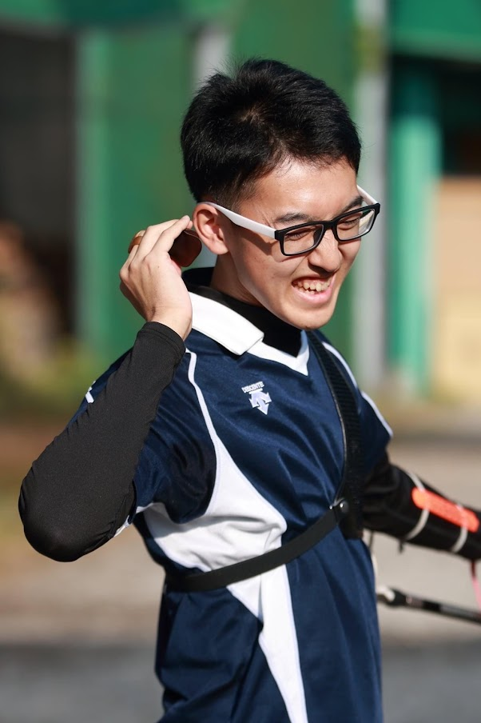

第十二回の今回は文学部教育学科の山崎蒼太くんにインタビューをしました。山崎くんは、外部からの経験者で来年の新人指導補佐を務めます！学科や部活の雰囲気などについて教えてくれました！
教育学科のいいところは、めちゃくちゃアットホームなところです！コロナ禍でオンライン授業が多い中でも、少人数でカメラオンの授業で教育について話し合うことで1,2か月もすれば、教授たちも含めてみんなが仲間みたいな感じです。また、他学科よりも対面授業が少し多いのも魅力です。そして、学科のみんながほぼ同じ授業を履修するので心強いですし、語学以外はテストではなくレポートが中心なので、毎回の授業をコツコツと頑張れば単位を取るのは全く問題ないです！
外部の高校でアーチェリー部に所属していて、大学で違う競技に転向するか迷っていたのですが、新歓や仮入部での雰囲気がとてもよく、この先輩方とアーチェリーを続けたい！と思ったからです。
練習したい人は夜８時まで練習することができるので、平日の授業が終わった夕方からでも十分練習することができ、両立はとてもしやすいです！
まず、新人への技術指導が充実しているところが魅力です。上級生が一からほぼ付きっきりで教えてくれるので確実に技術を向上させることができます！自分のペースで活動できるのも魅力です。練習は射った本数のノルマが基本となるので、平日はバイトや授業との両立がしやすいです。また、土日は学内試合や練習試合などが充実しています！
黄ばんでいるところです（笑）もともとは真っ白だったのですが、高校生の頃に日差しが照りつく中で練習しすぎました…黄ばみが努力の結晶だと思ってのこだわりです。
平日週2日で1日4〜6時間勤務です。
土日は練習試合があったりと部活に集中したいので平日に、バイトをすることで両立できています。
大学には小中高とは全く違った楽しい生活が待っています！その生活をアーチェリー部で叶えませんか！
いかがだったでしょうか。アーチェリー部では新人への指導を丁寧に行うため、他の競技に比べ未経験でも始めやすいことが魅力です！次回は法学部政治学科の山本佳奈さんです！